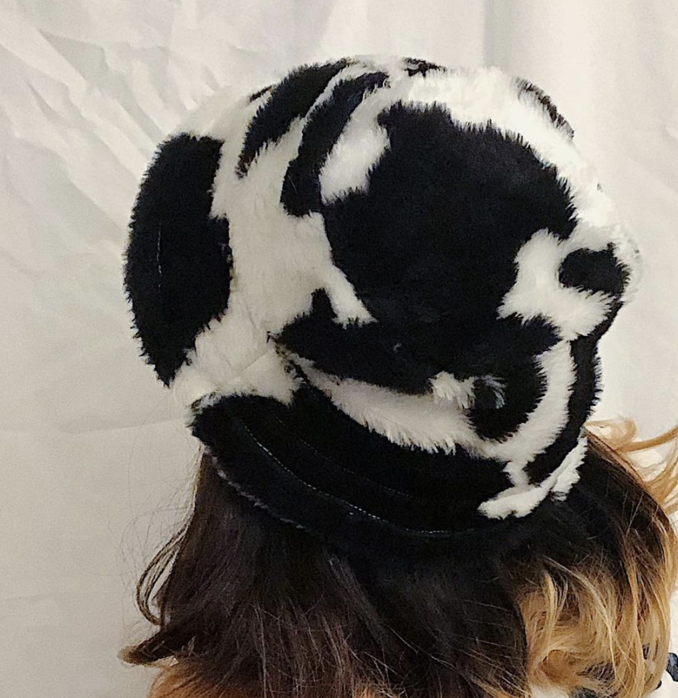
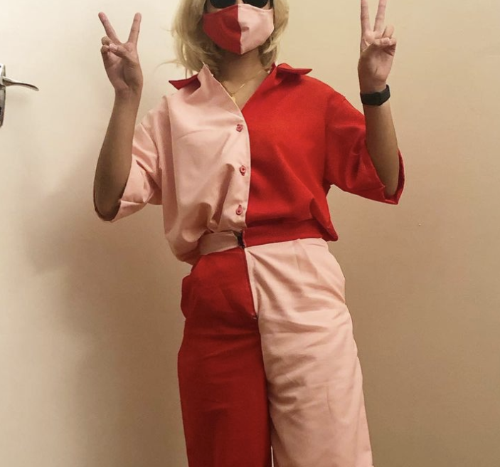
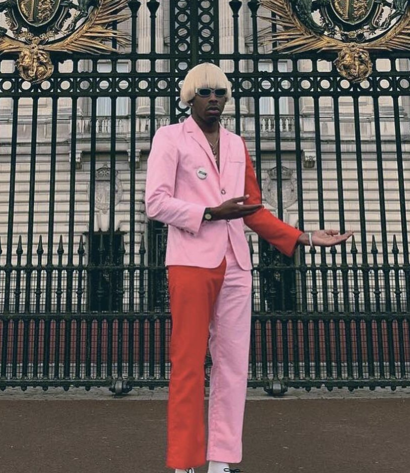

Sewing Projects
Cow Bucket Hat
With assistance from a sewing pattern found online, I made this beautiful cow hat. It took about 3 hours to do considering the material was awfully thick and I broke about 3 machine needles in the process. Can you tell frogs are my favourite animals?
Tyler, the Creator's IGOR
The hugest leap I could have made from a hat, I decided to make a full Halloween costume, complete with a matching face mask. Tyler, the Creator wore a pink and red suit for the concept of his latest album, IGOR, and in spirit of that, I decided to recreate it in the form of a button-up and shorts, a combination I was more likely to wear on a regular basis (we are, after all, making clothes ourselves for sustainability purposes, which also means everything I make should be used tens of times like anything else in my closet!).
 